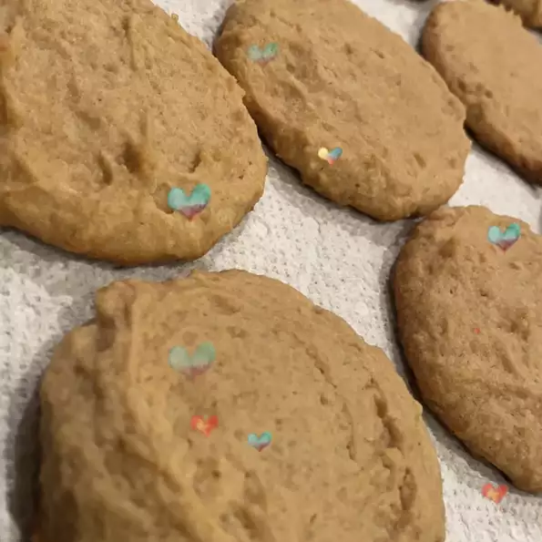

Peanut Butter Cookies

Description
Tasty cookies easy to make
Ingredients
- 1 cup peanut butter
- ½ cup butter, softened
- ½ cup white sugar
- ½ cup packed brown sugar
1 egg
- 3 tablespoons milk
- 1 teaspoon vanilla extract
- 1 ¼ cups all-purpose flour
- ¾ teaspoon baking powder
- ¼ teaspoon salt
Steps
- 1 ¼ cups all-purpose flour
- In a large bowl, cream together the peanut butter, butter, white sugar, and brown sugar until well blended. Beat in the egg, milk, and vanilla one at a time. Combine the flour, baking powder, and salt; stir into creamed mixture. Roll tablespoonfuls of dough into balls. Place cookies 2 inches apart onto ungreased cookie sheets. Press each ball once with fork tines.
- Bake for 8 to 10 minutes in the preheated oven, or until edges are lightly browned.